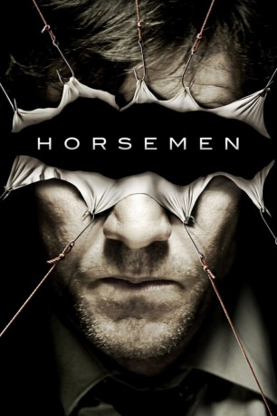

#10942 Horsemen
 
 IMDB-Wertung: 5.6 / 10
IMDB-Wertung: 5.6 / 10  Tomatometer: 33
Tomatometer: 33  Metascore: 0
Metascore: 0 
Der verwitwete Ermittler Aidan Breslin befindet sich noch immer in Trauer um seine verstorbene Ehefrau. Immer mehr stürzt er sich in die Arbeit und vernachlässigt dabei seine zwei Kinder. In einer aktuellen Serie von Morden entdeckt er eine Verbindung: Alle Taten basieren auf je einem der apokalyptischen Reiter, die in der biblischen Prophezeiung erwähnt werden...
Jahr: 2009
Dauer: 90 Minuten
FSK: 18
Land: USA Studio: LionsgateTonspuren: DTS - ,
Untertitel: Deutsch,
Auflösung: 1080p (1920x1080) Größe: 6922 MB
Genre: Thriller, Drama, Krimi, Mystery
Regisseur: Jonas Åkerlund
Drehbuch: Dave Callaham
Soundtrack: Jan A.P. Kaczmarek
Darsteller:
 Dennis Quaid als Aidan Breslin
Dennis Quaid als Aidan Breslin Ziyi Zhang als Kristin
Ziyi Zhang als Kristin Lou Taylor Pucci als Alex Breslin
Lou Taylor Pucci als Alex Breslin Clifton Collins Jr. als Stingray
Clifton Collins Jr. als Stingray Barry Shabaka Henley als Tuck
Barry Shabaka Henley als Tuck Patrick Fugit als Corey
Patrick Fugit als Corey Eric Balfour als Taylor
Eric Balfour als Taylor Paul Dooley als Father Whiteleather
Paul Dooley als Father Whiteleather Thomas Mitchell als Thug
Thomas Mitchell als Thug Liam James als Sean Breslin
Liam James als Sean Breslin Chelcie Ross als Police Chief Krupa
Chelcie Ross als Police Chief Krupa David Dastmalchian als Terrence
David Dastmalchian als Terrence Peter Stormare als David Spitz
Peter Stormare als David Spitz Aaron Hughes als Young Officer
Aaron Hughes als Young Officer Stephen Eric McIntyre als Banksy
Stephen Eric McIntyre als Banksy- Carly Thomas als Teresa Spitz
- Omar Alex Khan als Officer Booker
- Deborah Odell als Ms. Bradshaw
- Maritza Cabrera als Police Station Secretary (uncredited)
- Daryl Dorge als Garrison Jacobs (Famine / Pestilence - Black Horse) (uncredited)
- Manfred Maretzki als Bob
- Arne MacPherson als Navratil
 Darren Felbel als Control Room Guy
Darren Felbel als Control Room Guy- Mel Stocking als Old Man with Dog
- Joanne Rodriguez als Metal Face
- Natasha Kuzyk als Angie Spitz
- John Callander als Officer
- Darren Wall als Random Officer
- Kevin Power als Gregor
- Brenda Gorlick als Lee Shoemaker
- Onalee Ames als Mary Anne Spitz
- Carey Smith als Uniformed Officer
- Shailee Ferguson als Rose The Babysitter
- Jeff Shannon als Dark Figure
- Kinga Rylend als Girl in Closet
Datei: X:\FSK18-2000-2009\Horsemen (2009, FSK18, 1920x1080).mkv seit 08.04.2019
Festplatte: FSK18
 Es gibt insgesamt 106 Filme in der Gruppe 'FSK18-2000-2009'
Es gibt insgesamt 106 Filme in der Gruppe 'FSK18-2000-2009'